01
<奇点>
Map 01
灵光一闪，诸般皆有
一条笔直的线 自亘古 穿透现在 直至永恒 有人说 有人说 也有人说 无知无罪无用 无端的恶意由此滋生 人生 沿着整个海岸线 直到最后的净土
Minimal Isometric Tower Defense
阿奇佩拉戈 · 北落之光
极简 2D 塔防。在近乎无色的等距战场上部署炮塔、管理资源、抵御波次—— 颜色是稀世珍宝，直到它淹没战场。14 关反攻，从最后的净土到阿奇佩拉戈之北。
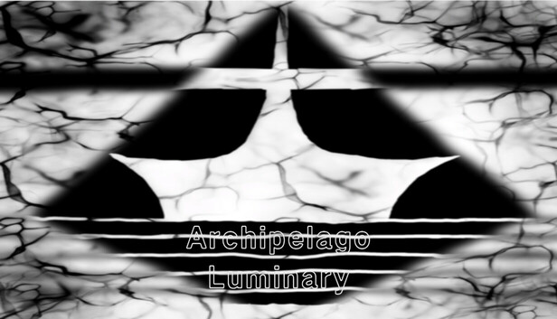
← 横向滑动查看完整战场 →
01 — Transmission Log
一夜，一粒光坠入北方的海底。从那一刻起，无尽的怪物从深处涌出。
北方王国的人们一步步撤退，直到只剩下最后的净土——直到人类建起第一座炮塔……
跨越 14 个关卡，从简单的通道到错综复杂的路径，一步步逼近神之所在。故事不止于战斗——42 件关键物散落在关卡之间，每关三星，每星随机拾得一件，拼凑出被遗忘的真相。
第四关名为「他们讨厌我，我也讨厌他们」；最后一关「灵光一闪，诸般皆无」——在阿奇佩拉戈之北，存留的人们最终还是选择战胜。
02 — Campaign
一条笔直的线 自亘古 穿透现在 直至永恒 有人说 有人说 也有人说 无知无罪无用 无端的恶意由此滋生 人生 沿着整个海岸线 直到最后的净土
破碎的几何体悬浮于废墟之上 同他引以为傲的领土一样 人类被深埋其中 等待一切威胁隐喻 等待一切躁动心宁 等到最后 在尽头 一个光照不到的拐角
重建日 不真实存在的三角方碑 所有人都喜欢笑着 糖胚里流出燃烧的黑 浇筑倒悬的 切剖底层的 拾起融化的身手 我好像在哪里见过 <你>的诞生
并非借口 不是理由 玻璃做的迷宫永远也困不住 即便涂满喜欢的颜色 除非谁又在其中看到了自己 毕竟连瞳孔也记不住 所有纸做的事 诱捕那些害虫的兽
不必多言 当熔岩凝固成棋盘 彼此都再难以下手 这里的每一块碎片 并非是在刻意强调 勋章与花和谁 那些说不出口的话 那些最后成为哑巴的人
与日出无关的时候 与月落无关的地方 液态的记忆无法长存 至今却仍有人谈论日月的美丽 即便从未见过真实 大家也在幻想 还不懂吗 曾有一粒光落此地
标签和标本 上述玻璃成为容器 血管里长出两钟幼虫 树叶在夹层中枯败 书页里流淌着泥沙 那些如星星般数目的 终将如星星般闪耀 现在 如星星般黯然无光
接下来 睁开眼 按照做 想象雪山 想象雨林 再想象太阳 闭上眼 直到记忆自深海里涌来 此刻是从未见过的珍奇罗列 睁开眼 很难不去再去想象
一种不痛的方法 一些必要的牺牲 一群无辜的生命 还在担心什么 犹豫同光粒般永恒 不用保持这个姿势 不必反复按下按钮 做<你>想做的事 以一种更疯狂的形态
真相 至少从落水的那一刻起 直到现在人们偶尔还会讨论 流星般的轨迹 究竟要如何牵制 又如何吸引 纯粹理性的化身闭上第三只眼 整个世界都变得触手可及
亲爱的 不必开门 一点题外话罢 即便我们还隔着一片海的距离 墙 墙外的人形变幻莫测 墙外的声音扑簌迷离 所以我说 人的一生应该还是要多开门看看才行
闭口不谈短暂与永恒的联系 时间自始自终 都是最开始的线 早有人料到这场灾难 三角形们清理世界的诟病 所有不同版本的故事 快进到同一个结局
另一个<你> 倒三角的神 闭眼掷下 一粒光 一矢中的 一处世界的根源 和它的蛀虫们 现在暴露无遗
阿奇佩拉戈之北 存留的人们最终还是选择战胜 一个通俗故事的结局 没有一点想象的余地 在<你>回收光粒之前 再看最后一眼 北落之光
03 — Armory
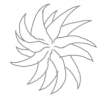
造价格式为 基础 + 每座递增。全部 14 座炮塔都以哲学名词命名，各自只做一件事；每座炮塔有且仅有一次升级。 建造时左键选中炮塔后点击地块，右键拖动视野、滚轮缩放，时间可在 0 / 0.5 / 1 / 1.5 / 2 倍间循环切换。
04 — Threat Index
生命提升至 150%，与加速同源。
速度提升至 150%，冲线更快。
死亡时摧毁范围内 3 格的炮塔。
伤害免疫 33%，与加速同体。
每秒为范围内友军恢复 5 点生命，范围 3。
每次受伤向前瞬移 1 格，冷却 1 秒。
死亡后延迟 5 秒，分裂出 1 个复制体。
死亡时召唤新的普通敌人。
另有伪免疫：每 5 秒静止 1 秒，期间完全免伤（与减伤共用同一能力标记）。 14 种敌人各有独特能力，在越来越疯狂的波次中推进——胜利悬于一线。
05 — Art & Narrative
在黑白分明的美学中，颜色成为稀世珍宝。玩家在几乎无色的等距网格战场上作战——白色炮塔、黑色棋盘、金色资源数字——直到关键时刻颜色淹没战场。每一抹色彩都有其重量。
故事不直接讲述，而是通过关键物与四行诗逐渐拼凑：42 件关键物各有名称与描述，14 座炮塔各有基础与升级两首四行诗，14 种敌人各有描述。剧情猎手可以在这些碎片中重建被遗忘的真相，揭开 Luminary 的核心谜团。
语言表覆盖简体中文、繁體中文、English、日本語、한국어、Русский、Français、Deutsch、Español 九种，每种各 240 条文案，逐条独立翻译（仅「Archipelago」「光子」等少数专名在各语言中写法相同）。首次启动时会读取 Steam 客户端语言并自动切换，也可在设置中循环切换。
左键选中炮塔后点击地块建造；右键拖动视野、滚轮缩放，右键点击炮塔或敌人聚焦查看；时间可在0 / 0.5 / 1 / 1.5 / 2 倍间循环切换。生命最多承受三次伤害，每次点击红心会随机升级一座已建炮塔，但代价是一点生命。
06 — Capture
07 — Spec Sheet
在 Steam 购买，从最后的净土开始，一步步揭开 Luminary 的真相。